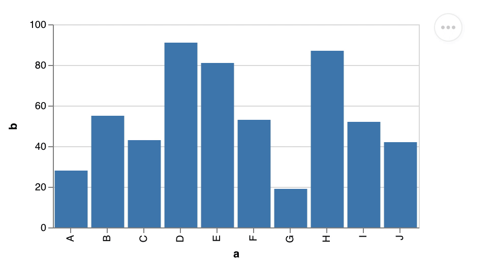

vega-embed
Vega-Embed


Vega-Embed makes it easy to embed interactive Vega and Vega-Lite views into web pages. With Vega Embed, you can:
- Load Vega/Vega-Lite specs from source text, parsed JSON, or URLs.
- Patch Vega specs (even ones generated from Vega-Lite) to add additional functionality; for example, see Rotating Earth.
- Add action links such as "View Source" and "Open in Vega Editor".
- Includes Vega Tooltip.
- Includes Vega Themes. Experimental: themes are not stable yet
Vega-Lite works well with Observable. Learn how to use it in our example notebook.

Basic Examples
Directly in the Browser
You can import Vega-Embed from a local copy or (as shown below) from jsDelivr. Please replace [VERSION] with the correct Vega, Vega-Lite, and Vega-Embed versions. We recommend that you specify the major versions (vega@5, vega-lite@5, vega-embed@6).
<!DOCTYPE html>
<html>
<head>
<!-- Import Vega & Vega-Lite (does not have to be from CDN) -->
<script src="https://cdn.jsdelivr.net/npm/vega@[VERSION]"></script>
<script src="https://cdn.jsdelivr.net/npm/vega-lite@[VERSION]"></script>
<!-- Import vega-embed -->
<script src="https://cdn.jsdelivr.net/npm/vega-embed@[VERSION]"></script>
</head>
<body>
<div id="vis"></div>
<script type="text/javascript">
var spec = 'https://raw.githubusercontent.com/vega/vega/master/docs/examples/bar-chart.vg.json';
vegaEmbed('#vis', spec)
.then(function (result) {
// Access the Vega view instance (https://vega.github.io/vega/docs/api/view/) as result.view
})
.catch(console.error);
</script>
</body>
</html>
JavaScript or TypeScript
The basic example below needs to be transpiled and bundled (using rollup, webpack, etc..) before it can be loaded in a browser.
import embed from 'vega-embed';
const spec = {
...
}
const result = await embed('#vis', spec);
console.log(result.view);
In Observable
You can require embed with embed = require('vega-embed@6') and then embed a chart with viewof view = embed(...). Check the our example notebook for more details.
API Reference
When using a script tag, the default export of Vega-Embed is a wrapper function that automatically chooses between embed and container based on the provided arguments. Vega-Embed provides this convenience for imports in interactive environments like Observable. When using the Vega-Embed npm package, the default export is the embed function.
Returns a Promise that resolves to a result object. The result object contains:
| Property | Type | Description |
|---|---|---|
view |
String | The instantiated Vega View instance. |
spec |
Object | A copy of the parsed JSON Vega or Vega-Lite spec. |
vgSpec |
Object | The compiled Vega spec. |
finalize |
Function | A method to prepare embed to be removed. To prevent unwanted behaviors and memory leaks, this method unregisters any timers and removes any event listeners the visualization has registered on external DOM elements. Applications should invoke this method when a Embed or the View instance is no longer needed. This method calls view.finalize. |
The embed function accepts the following arguments:
| Property | Type | Description |
|---|---|---|
el |
String | A DOM element or CSS selector indicating the element on the page in which to add the embedded view. |
spec |
String / Object | String : A URL string from which to load the Vega specification. This URL will be subject to standard browser security restrictions. Typically this URL will point to a file on the same host and port number as the web page itself. Object : The Vega/Vega-Lite specification as a parsed JSON object. |
opt |
Object | (Optional) A JavaScript object containing options for embedding. |
Note: Internet Explorer does not support the ES6 Promise feature. To make it work correctly, please follow the instructions on the Vega website.
Returns a Promise* that resolves to an HTML element with the Vega View instance as the value property. The function is designed to work with Observable. The container function accepts the following arguments:
| Property | Type | Description |
|---|---|---|
spec |
String / Object | String : A URL string from which to load the Vega specification. This URL will be subject to standard browser security restrictions. Typically this URL will point to a file on the same host and port number as the web page itself. Object : The Vega/Vega-Lite specification as a parsed JSON object. |
opt |
Object | (Optional) A JavaScript object containing options for embedding. |
Options
You can configure Vega Embed with an options object. You can pass options as an argument to the embed function or as usermeta.embedOptions as part of the Vega or Vega-Lite specification.
var opt = {
mode: ...,
config: ...,
theme: ...,
defaultStyle: ...,
bind: ...,
// view config options
renderer: ...,
loader: ...,
logLevel: ...,
tooltip: ...,
patch: ...,
width: ...,
height: ...,
padding: ...,
actions: {
export: ...,
source: ...,
compiled: ...,
editor: ...
},
scaleFactor: ...,
editorUrl: ...,
sourceHeader: ...,
sourceFooter: ...,
hover: {
hoverSet: ...,
updateSet: ...,
},
downloadFileName: ...,
formatLocale: ...,
timeFormatLocale: ...,
expressionFunctions: ...,
ast: ...,
expr: ...,
i18n: {
COMPILED_ACTION: ...,
EDITOR_ACTION: ...,
PNG_ACTION: ...,
SOURCE_ACTION: ...,
SVG_ACTION: ...
}
}
| Property | Type | Description |
|---|---|---|
mode |
String | If specified, tells Vega-Embed to parse the spec as vega or vega-lite. Vega-Embed will parse the $schema url if the mode is not specified. Vega-Embed will default to vega if neither mode, nor $schema are specified. |
config |
String / Object | String : A URL string from which to load a Vega/Vega-Lite or Vega-Lite configuration file. This URL will be subject to standard browser security restrictions. Typically this URL will point to a file on the same host and port number as the web page itself. Object : A Vega/Vega-Lite configuration as a parsed JSON object to override the default configuration options. |
theme |
String | If specified, tells Vega-Embed use the theme from Vega Themes. Experimental: we may update themes with minor version updates of Vega-Embed. |
defaultStyle |
Boolean or String | If set to true (default), the embed actions are shown in a menu. Set to false to use simple links. Provide a string to set the style sheet (not supported in usermeta). |
forceActionsMenu |
Boolean | If set to true, the embed actions are shown in a menu like they would be if the defaultStyle option were truthy. This can be useful when setting defaultStyle to false and defining menu styles in the parent application. |
bind |
String or Element | The element that should contain any input elements bound to signals. |
renderer |
String | The renderer to use for the view. One of "canvas" (default) or "svg". See Vega docs for details. May be a custom value if passing your own viewClass option. |
logLevel |
Level | Sets the current log level. See Vega docs for details. |
tooltip |
Handler or Boolean or Object | Provide a tooltip handler, customize the default Vega Tooltip handler, or disable the default handler. |
loader |
Loader / Object | Loader : Sets a custom Vega loader. Object : Vega loader options for a loader that will be created. See Vega docs for details. |
patch |
Function / Object[] / String | A function to modify the Vega specification before it is parsed. Alternatively, a JSON-Patch RFC6902 to modify the Vega specification. If you use Vega-Lite, the compiled Vega will be patched. Alternatively to the function or the object, a URL string from which to load the patch can be provided. This URL will be subject to standard browser security restrictions. Typically this URL will point to a file on the same host and port number as the web page itself. |
width |
Number | Sets the view width in pixels. See Vega docs for details. Note that Vega-Lite overrides this option. |
height |
Number | Sets the view height in pixels. See Vega docs for details. Note that Vega-Lite overrides this option. |
padding |
Number / Object | Sets the view padding in pixels. See Vega docs for details. |
actions |
Boolean / Object | Determines if action links ("Export as PNG/SVG", "View Source", "View Vega" (only for Vega-Lite), "Open in Vega Editor") are included with the embedded view. If the value is true, all action links will be shown and none if the value is false. This property can take a key-value mapping object that maps keys (export, source, compiled, editor) to boolean values for determining if each action link should be shown. By default, export, source, and editor are true and compiled is false. These defaults can be overridden: for example, if actions is {export: false, source: true}, the embedded visualization will have two links – "View Source" and "Open in Vega Editor". The export property can take a key-value mapping object that maps keys (svg, png) to boolean values for determining if each export action link should be shown. By default, svg and png are true. |
scaleFactor |
Number / Object | Number: The number by which to multiply the width and height (default 1) of an exported PNG or SVG image. Object: The different multipliers for each format ( { svg: <Number>, png: <Number> }). If one of the formats is omitted, the default value is used. |
editorUrl |
String | The URL at which to open embedded Vega specs in a Vega editor. Defaults to "http://vega.github.io/editor/". Internally, Vega-Embed uses HTML5 postMessage to pass the specification information to the editor. |
sourceHeader |
String | HTML to inject into the head tag of the page generated by the "View Source" and "View Vega" action link. For example, this can be used to add code for syntax highlighting. |
sourceFooter |
String | HTML to inject into the end of the page generated by the "View Source" and "View Vega" action link. The text will be added immediately before the closing body tag. |
hover |
Boolean or Object | Enable hover event processing. Hover event processing is enabled on Vega by default. Boolean: Enables/disables hover event processing. Object: Optional keys ( hoverSet, updateSet) to specify which named encoding sets to invoke upon mouseover and mouseout. |
i18n |
Object | This property maps keys (COMPILED_ACTION, EDITOR_ACTION, PNG_ACTION, SOURCE_ACTION, SVG_ACTION) to string values for the action's text. By default, the text is in English. |
downloadFileName |
String | Sets the file name (default: visualization) for charts downloaded using the png or svg action. |
formatLocale |
Object | Sets the default locale definition for number formatting. See the d3-format locale collection for definition files for a variety of languages. Note that this is a global setting. |
timeFormatLocale |
Object | Sets the default locale definition for date/time formatting. See the d3-time-format locale collection for definition files for a variety of languages. Note that this is a global setting. |
expressionFunctions |
Object | Sets custom expression functions. Maps a function name to a JavaScript function, or an Object with the fn, and visitor parameters. See Vega Expression Functions for more information. |
ast |
Boolean | Generate an Abstract Syntax Tree (AST) instead of expressions and use an interpreter instead of native evaluation. While the interpreter is slower, it adds support for Vega expressions that are Content Security Policy (CSP)-compliant. |
expr |
Object | Custom Vega Expression interpreter. |
viewClass |
Class | Class which extends Vega View for custom rendering. |
Common questions
How do I send cookies when loading data?
By default, the Vega loader does not send the credentials of the current page with requests. You can override this behavior by passing {loader: { http: { credentials: 'same-origin' }}} as the embed option.
What CSS should I use to support container sizing?
When using container sizing in Vega-Lite, make sure to set the width of the DOM element you passed to Embed.
Build Process
To build vega-embed.js and view the test examples, you must have npm installed.
- Run
npm installin the Vega-Embed folder to install dependencies. - Run
npm run build. This will createvega-embed.jsand the minifiedvega-embed.min.js. - Run a local webserver with
npm run startthen point your web browser at the test page (e.g.,http://localhost:8000/test-vg.html(Vega) orhttp://localhost:8000/test-vl.html(Vega-Lite)).
Publishing
To make a release, run npm run release.